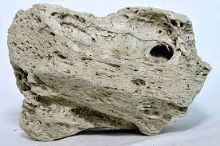

Mineração, rochas e tecnologias
Objetivo:
O objetivo principal do Projeto Interdisciplinar é promover a troca de conhecimentos e experiências entre os alunos dos cursos de Mineração e Desenvolvimento Web. Através dessa interação, os estudantes poderão aplicar conceitos e técnicas aprendidas em ambos os cursos para desenvolver projetos que atendam às necessidades e desafios da indústria de mineração.
Área de Mineração e Desenvolvimento Web
O Projeto Interdisciplinar Mineração e Desenvolvimento Web é uma iniciativa que busca a integração dos conhecimentos e habilidades dos cursos técnicos de Mineração e Desenvolvimento Web. A proposta visa criar um ambiente colaborativo onde os estudantes dessas áreas poderão unir forças para desenvolver soluções inovadoras e tecnológicas para a indústria da mineração.
Atividades:
O projeto contará com atividades práticas que estimularão a integração das duas áreas. Os estudantes terão a oportunidade de trabalhar em equipes multidisciplinares, onde cada membro poderá contribuir com suas habilidades específicas. Serão desenvolvidos projetos que envolvam a aplicação de tecnologias web para otimizar processos de mineração, coletar e analisar dados, melhorar a segurança e a gestão de operações, entre outras possibilidades.
Benefícios:
A integração dos cursos de Mineração e Desenvolvimento Web trará benefícios significativos para os estudantes e para a indústria. Os alunos terão a oportunidade de expandir seus horizontes profissionais, adquirindo uma visão ampla e inovadora das possibilidades de aplicação da tecnologia na mineração. Além disso, a indústria poderá se beneficiar do surgimento de novas soluções e ideias que possam melhorar a eficiência, a segurança e a sustentabilidade das operações de mineração.
Tipos de Rochas
As rochas são materiais naturais sólidos compostos por minerais e podem ser encontradas em diversas formas e composições. Na área de mineração, os profissionais lidam com diferentes tipos de rochas, cada uma com suas características e aplicações específicas.
-
Granito
O granito é uma rocha ígnea de grão fino e textura uniforme. É amplamente utilizado como material de construção e acabamento. Suas cores podem variar, apresentando desde tons claros até mais escuros, o que o torna uma opção versátil em projetos arquitetônicos e de design.
-
Basalto
O basalto é uma rocha ígnea vulcânica de cor escura, geralmente preto ou cinza. Sua resistência e durabilidade o tornam ideal para pavimentação de estradas, calçadas e revestimentos externos. Também é utilizado como material para construção de muros de contenção e elementos decorativos.
-
Calcário
O calcário é uma rocha sedimentar composta principalmente de carbonato de cálcio. Sua tonalidade pode variar do branco ao cinza e é amplamente utilizado na indústria da construção civil, na produção de cimento, cal, concreto e até mesmo como corretivo de solos na agricultura.
-
Mármore
O mármore é uma rocha metamórfica de aspecto nobre e aparência sofisticada. É conhecido por sua beleza e é amplamente utilizado em esculturas, pisos, revestimentos de parede e bancadas.


-
Quartzo
O quartzo é uma rocha composta principalmente de sílica. Pode apresentar diversas cores e é utilizado na fabricação de vidro, em peças decorativas e também em revestimentos de superfícies.
-
Areia e Cascalho
A areia e o cascalho são rochas sedimentares muito comuns na mineração. São utilizados como materiais de construção, em concretos, asfaltos e também em sistemas de drenagem. A variedade de granulometria permite sua aplicação em diversas situações.


-
Xisto
O xisto é uma rocha metamórfica composta principalmente de argila. Possui foliações bem definidas e é usado na produção de óleo de xisto e também em pisos e revestimentos.
-
Ardósia
A ardósia é uma rocha metamórfica de textura lisa e foliada. É amplamente utilizada na produção de lousas e pisos de alta qualidade, devido à sua resistência e estética atraente.
-
Gnaisse
O gnaisse é uma rocha metamórfica formada a partir de rochas sedimentares e ígneas que passaram por um processo de metamorfismo. Sua aparência foliada e textura granulada o tornam ideal para revestimentos externos e ornamentações.
-
Quartzito
O quartzito é uma rocha metamórfica derivada do quartzo. Sua aparência é similar à do mármore, mas sua composição o torna mais resistente e durável. É amplamente utilizado em revestimentos, pisos e bancadas.
-
Pedra-pomes
A pedra-pomes é uma rocha vulcânica de baixa densidade e porosidade. É comumente utilizada como abrasivo suave em esfoliantes e produtos de limpeza. Também pode ser empregada na fabricação de concretos leves.
 -
Carvão Mineral
O carvão mineral é uma rocha sedimentar formada a partir de restos de plantas acumulados em ambientes com baixo teor de oxigênio. É uma importante fonte de energia para a geração de eletricidade e também é utilizado na produção de aço, na indústria de cimento e em processos químicos.


-
Bauxita
A bauxita é uma rocha sedimentar rica em óxidos de alumínio. É a principal fonte de alumínio utilizado na indústria. A bauxita é extraída em grandes quantidades para produção de alumínio e seus derivados, usados em embalagens, peças automotivas, construções e diversos outros produtos.
-
Calcário Dolomítico
O calcário dolomítico é uma rocha sedimentar composta principalmente por carbonato de cálcio e magnésio. É utilizado na correção de acidez do solo na agricultura, além de ser uma importante matéria-prima na indústria de vidro, siderúrgica e na produção de cimento.


Equipamentos de Mineração de Exploração de Rochas
A mineração de exploração de rochas é uma atividade complexa que requer o uso de diversos equipamentos especializados para a extração, transporte e processamento de diferentes tipos de rochas. Esses equipamentos são projetados para operar em ambientes desafiadores e garantir a eficiência e segurança das operações. Abaixo, listamos alguns dos principais equipamentos utilizados na mineração de exploração de rochas:
-
Escavadeiras
As escavadeiras são máquinas robustas e de grande porte, equipadas com uma poderosa pá mecânica ou caçamba frontal. Elas são utilizadas para escavar e carregar grandes quantidades de rochas e minerais em caminhões basculantes ou transportadoras.
-
Caminhões Basculantes
Os caminhões basculantes, também conhecidos como caminhões fora-de-estrada, são projetados para transportar grandes cargas de rochas e minerais em terrenos acidentados. Eles possuem uma carroceria basculante que permite o descarregamento fácil e rápido do material em locais designados.


-
Perfuratrizes
As perfuratrizes são equipamentos utilizados para perfurar furos profundos no solo e nas rochas. Esses furos são essenciais para a colocação de explosivos que fragmentam a rocha, facilitando a sua extração posterior.
-
Britadores
Os britadores são máquinas projetadas para reduzir o tamanho das rochas em pedaços menores. Eles podem ser encontrados em diferentes tamanhos e capacidades, e são essenciais no processo de quebra e trituração do material para posterior processamento.
-
Peneiras Vibratórias
As peneiras vibratórias são utilizadas para separar diferentes tamanhos de partículas de rochas e minerais. Elas funcionam por meio de movimentos vibratórios que classificam o material de acordo com o seu tamanho.


-
Transportadoras de Correia
As transportadoras de correia são sistemas que permitem o transporte contínuo de materiais a granel, como rochas e minerais, em longas distâncias. Elas facilitam o transporte do material extraído até o local de processamento ou armazenamento.


-
Máquinas de Corte a Fio Diamantado
As máquinas de corte a fio diamantado são utilizadas para fazer cortes precisos em blocos de rochas. Elas permitem a extração de grandes blocos com formatos específicos, reduzindo o desperdício de material.


Além desses equipamentos, existem muitos outros utilizados na mineração de exploração de rochas, cada um com sua função específica para tornar o processo mais eficiente e seguro.